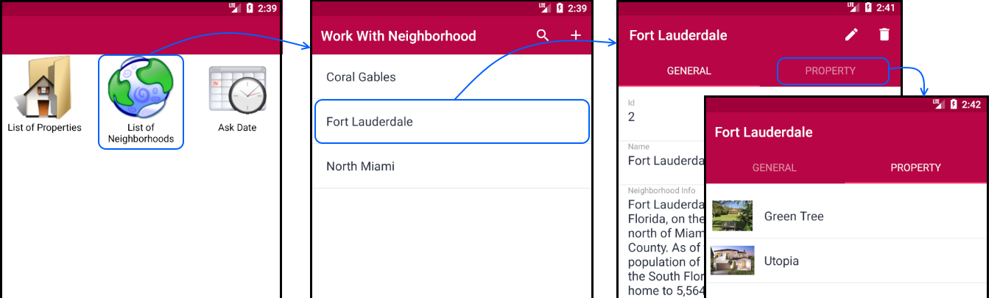

Panel and Work With for Smart Devices tabs
For each Work With for Smart Devices List Node, and Work With for Smart Devices Detail Node defined in the Work With for Smart Devices object instance, a window is generated to the right depending on the selector (or tab) chosen.
This article also applies to the Panel object.
Layout tab
It indicates what attributes/variables among other controls will be shown and how they will be shown.
In the example above, the attributes PropertyFrontImage, PropertyName and PropertyAddress from the Property transaction (handled by a real estate agency) are listed inside a grid control.
Although you can see only one layout at a time (e.g. the "Any Platform, Default Orientation" one) for the List node. Note the possibility to Add a new one, or Delete the current. This let you design different layouts depending on the Platform (i.e. Android, iOS), the Device Kind (i.e. Phone, Tablet, Watch, TV), the Size (i.e. Phone, Tablet 7'', Tablet 10'') and/or the Orientation (i.e. Landscape, Portrait). For the Work with for Smart Devices Section Node it also offers the Mode (i.e. View or Edit) to differentiate the layout displayed to insert, update or delete, from the layout displayed to just view the information.
Rules tab
As the Web Panel rules, specify some kind of behavior of the corresponding WWSD node (List, Detail or Sections). Rules provide a generic language to enforce the controls in these programs.
For example, specify the parameters received and/or returned by the node. Do not confuse the rules of the node, with the rules of the Transaction, which will run when you insert, delete or modify the element corresponding to detail.
Events tab
The objective of Events is to provide behavior and interaction between clients and services. Note in the layout shown above the "Insert" button on the List node Application Bar. An 'Insert' event is automatically associated, calling the Detail node of that WWSD, in Insert mode:
As usual, other events could be created. Examples of this could be an action to show the real estate properties on a map, an action to call certain data, an action to schedule items, and so on. The actions available on the User Interface usually have a graphic element associated with them, such as a button, an option in a global menu, a link, and so on.
In the Work With for Smart Devices object, the user can add actions in the List node and in the Detail and Sections nodes. These actions can be placed on screen -besides associating them to controls- using the Application Bar of the pattern layouts.
In addition to the actions included by default ("Insert" Action for List, "Save", "Cancel", "Update" and "Delete" for Section), new actions can be defined.
The grammar of events running on the device has its peculiarities regarding the events that run on the server. This is due to the architecture. For example, to invoke two or more objects within an event sequence, you have to use the Composite command inside an event executed on the client (device).
To go deeper into this topic: Native Mobile Applications Events.
Conditions tab
This section allows the developer to specify free and global conditions over the whole object. This condition aims to filter the displayed data.
For conditions and fine-grained searches over a specific grid, controls refer to Orders and Filters in Grids for Native Mobile Applications.
Variables tab
Displays every variable defined on the object (List, Detail, and Section are independent), including standard pre-defined variables (Pgmdesc, Pgmname, Time, Today and Mode variable in Section node).
Related information
Relations among Transactions are also strictly generated in the Work With. Note the following Transactions:
As you can see, the Neighborhood Transaction has a 1-N relation with the Property Transaction, that is, for one neighborhood there can be N properties.
So, when you select one neighborhood, the relations tab will be displayed on top of its properties.

In the image above, the Coral Gables neighborhood was selected and the Level/Detail/Section (General)/View node was opened. Note that the General tab located in the upper section is selected. To the right is the Property tab, thus closing the relationships among entities. So, if you select the Property tab, you can access the list of all the properties of the selected neighborhood.
See Also
Videos

| Backlinks |
| Toc:Native Mobile Applications Development |
| Work With for Smart Devices Detail Node |
| Work With for Smart Devices List Node |